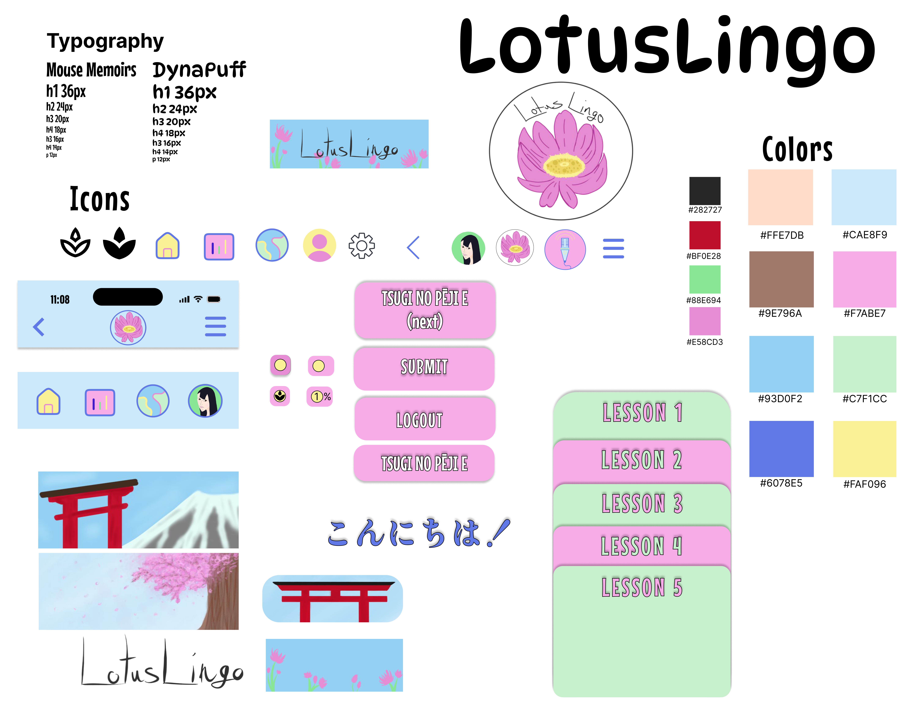

Visual identity / Design system
COLOR, TYPE & COMPONENTS色・文字・コンポーネント
CREATIVE DIRECTIONクリエイティブディレクション
The visual identity uses a bright palette of greens, deep pink, light blue, and soft peach, balanced with friendly typography and original illustrations. I created the lotus, cherry blossoms, torii gates, profile artwork, and navigation icons to give the product a recognizable visual language rather than relying entirely on generic interface elements.
The interface also needed to make different kinds of Japanese practice feel distinct. Reading and writing activities, pronunciation and speaking exercises, and formal versus informal language each have different learning needs. The Katakana lesson screens show how explanations, character recognition, pronunciation support, and writing practice can be organized into a more guided sequence.